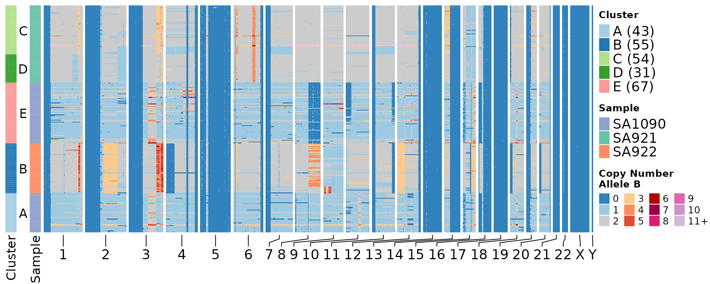

Allele Specific Copy Number Inference
ASCN.Rmdlibrary(schnapps)
Background
This vignette illustrates how to perform allele specific copy number inference with DLP+ data. However the method should be generally applicable to any single cell copy number method. The input requirements are discussed below.
Data
The data needed to perform the allele specific copy number inference are the binned copy number data and cell specific haplotype calls. The copy number data and the haplotype data should use the same bins.
A small test data set of 250 cells is provided with the package, we’ll load this data and inspect these 2 dataframe.
head(CNbins) #> cell_id chr start end state copy #> 1 SA922-A90554B-R24-C09 1 2000001 2500000 4 4.060400 #> 2 SA922-A90554B-R24-C09 1 3000001 3500000 4 4.284216 #> 3 SA922-A90554B-R24-C09 1 4000001 4500000 4 4.094158 #> 4 SA922-A90554B-R24-C09 1 4500001 5000000 4 4.233719 #> 5 SA922-A90554B-R24-C09 1 5000001 5500000 4 4.151288 #> 6 SA922-A90554B-R24-C09 1 5500001 6000000 4 3.907891
The haplotype data comes in long format, but the package requires data in wide format so we will use the helper function format_haplotypes_dlp to convert the data to the correct format, this function will also remove any bins present in the haplotypes data frame that is not present in the CNbins data frame.
haplotypes <- format_haplotypes_dlp(haplotypes, CNbins) head(haplotypes) #> cell_id chr start end hap_label allele1 allele0 #> 1 SA1090-A96213A-R20-C11 1 2000001 2500000 126 1 0 #> 2 SA1090-A96213A-R20-C11 1 2000001 2500000 128 1 0 #> 3 SA1090-A96213A-R20-C11 1 2000001 2500000 130 3 0 #> 4 SA1090-A96213A-R20-C11 1 2000001 2500000 132 11 0 #> 5 SA1090-A96213A-R20-C11 1 2000001 2500000 136 1 0 #> 6 SA1090-A96213A-R20-C11 1 2000001 2500000 142 1 0 #> totalcounts #> 1 1 #> 2 1 #> 3 3 #> 4 11 #> 5 1 #> 6 1
Inference
The output of schnapps is allele specific states per bin. schnapps has 2 options to perform this inference, the first, callAlleleSpecificCN, infers allele specific states using mirrored B allele frequencies as is typically done in bulk whole genome sequencing. This infers states of the form A|B where B < A. The second option, callHaplotypeSpecificCN takes into account the possibility that different alleles may be lost or gained in different cells. In order to identify these events, schnapps clusters cells and infers the haplotype phase based on regions within clusters that have large allelic imbalance. The output for this method thereofore allows for B>A.
callAlleleSpecificCN
ascn <- callAlleleSpecificCN(CNbins, haplotypes)
As a sanity check we can plot the B allele frequency (BAF) as a function of inferred state. We would expect to see a distribution around the expected value which is exactly what we see below.
plotBAFperstate(ascn, maxstate = 10)

Now we can plot the copy number heatmaps. First we’ll plot the heatmap based on copy number states. By default the plotHeatmap function does some clustering using hdbscan, we’ll set a seed so we get the same clustering for each of the heatmaps below.
set.seed(1) plotHeatmap(ascn, plotcol = "state", plottree = FALSE, spacer_cols = 15) #> #> 0 A B C D E F G #> 10 35 38 25 34 21 38 36

Now we can plot some heatmaps to visualize the allele specific state. This heatmap plots the minor copy number state.
plotHeatmap(ascn, plotcol = "state_min", plottree = FALSE, spacer_cols = 15) #> #> 0 A B C D E F G #> 10 35 38 25 34 21 38 36

Allelic imbalance:
plotHeatmap(ascn, plotcol = "state_BAF", plottree = FALSE, spacer_cols = 15) #> #> 0 A B C D E F G #> 10 35 38 25 34 21 38 36

Discrete representation of allelic imbalance:
plotHeatmap(ascn, plotcol = "state_phase", plottree = FALSE, spacer_cols = 15) #> #> 0 A B C D E F G #> 10 35 38 25 34 21 38 36

There are also some function to plot per cell BAF and state plots. You can specify a cell, or the default will take the first cell in the data frame.
plotCNprofileBAF(ascn)

Here we’ll plot and equivalent plot merging across cells
library(dplyr) ascn$data %>% group_by(chr, start, end) %>% summarise(state = schnapps:::Mode(state), state_min = schnapps:::Mode(state_min), BAF = median(BAF), state_phase = schnapps:::Mode(state_phase), copy = median(copy)) %>% ungroup() %>% mutate(cell_id = "Merged Cells") %>% # add dummy cell id plotCNprofileBAF(.)

The object returned by the inference function is of type ascn, if you want to pull out the data to use in your own scripts you can just do ascn$data. This will return a data.frame similar to the input data frames but with additional columns specifying the allele specific states.
callHaplotypeSpecificCN
Now we’ll do the analysis that phases haplotypes across cells.
hscn <- callHaplotypeSpecificCN(CNbins, haplotypes, phasebyarm = FALSE) #> #> A B C #> 73 90 74
We’ll now generate the same plots as before. We can see in the BAF per state plot that we now observe states with BAF > 0.5 meaning that we see different alleles gained or lost in different cells.
plotBAFperstate(hscn, maxstate = 10)

In the allelic imbalance heatmap we can see that some cells have gained the “B” allele and others the “A” allele resulting in imbalance spanning from 0 to 1.
set.seed(1) plotHeatmap(hscn, plotcol = "state_BAF", plottree = FALSE, spacer_cols = 15) #> #> A B C D E F G #> 21 25 44 35 38 38 36

In the discrete version of this plot we see similar patterns.
set.seed(1) plotHeatmap(hscn, plotcol = "state_phase", plottree = FALSE, spacer_cols = 15) #> #> A B C D E F G #> 21 25 44 35 38 38 36

plotCNprofileBAF(hscn)

Here we’ll merge all cells and plot together.
hscn$data %>% group_by(chr, start, end) %>% summarise(state = schnapps:::Mode(state), state_min = schnapps:::Mode(state_min), BAF = median(BAF), state_phase = schnapps:::Mode(state_phase), copy = median(copy)) %>% ungroup() %>% mutate(cell_id = "Merged Cells") %>% # add dummy cell id plotCNprofileBAF(.)

Dealing with noisy data
If the coverage per cell is on average low then estimating allele specific copy number can be challenging. This can result in “grainy” heatmaps, noisy cell profiles and inconsistent plotBAFperstate plots. One way to overcome this is to use larger bin sizes, schnapps provides 2 utility functions to “widen” the bins by taking an average across bins.
CNbins_wide <- widen_bins(CNbins, binsize = 5e6) haplotypes_wide <- widen_haplotypebins(haplotypes, binsize = 5e6) hscn_wide <- callHaplotypeSpecificCN(CNbins_wide, haplotypes_wide) #> #> A B C D #> 73 90 37 37
plotBAFperstate(hscn_wide, maxstate = 10)

set.seed(1) plotHeatmap(hscn_wide, plotcol = "state_BAF", plottree = FALSE, spacer_cols = 3) #> #> 0 A B C D E F G #> 10 37 36 34 25 21 38 36

In the discrete version of this plot we see similar patterns.
set.seed(1) plotHeatmap(hscn_wide, plotcol = "state_phase", plottree = FALSE, spacer_cols = 3) #> #> 0 A B C D E F G #> 10 37 36 34 25 21 38 36

plotCNprofileBAF(hscn_wide)